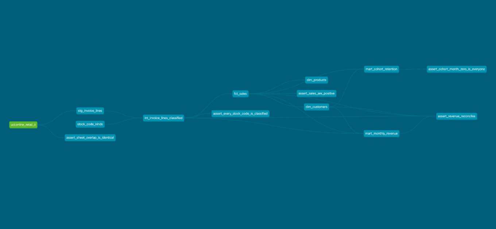
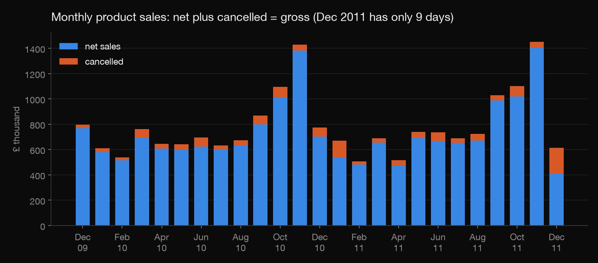
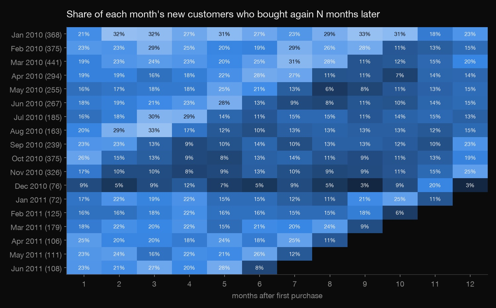
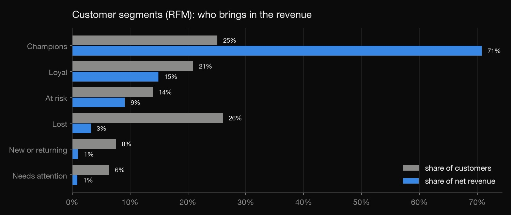

Analytics engineering · dbt · 2026-10
Retail Pipeline in dbt
A real online retailer's 1.07 million invoice lines turned into tested, documented tables (sales, customers, products, cohorts) with dbt and DuckDB.

Built and tested on demand on a laptop: there is no scheduler, CI or warehouse. The data is a fixed public file from 2009-2011, so there are no incremental models either.
01 — The problem
Raw sales exports are never analysis-ready. The same rows appear twice, postage and bank fees are mixed in with products, and cancellations hide inside the sales. Every analyst who touches the file has to clean it again, and they won't all clean it the same way. Can the cleaning be written once, as tested and documented SQL, so that every report starts from the same trusted tables? That's the job dbt does on analytics teams.
02 — What I built
A dbt project on DuckDB (a database that runs inside the laptop, no server) over UCI's Online Retail II: every invoice line of a UK online gift shop, Dec 2009 – Dec 2011.
- Layers: staging (clean and type), intermediate (classify each line), marts (facts, dimensions and the tables reports read).
- A seed file for business rules: which of 28 odd stock codes are postage, fees, vouchers or test items.
- 31 data tests, including five written for this data: sheet overlap, unclassified codes, positive sales, revenue reconciliation and cohort sanity.
- Generated docs: every model, column and test, plus the lineage graph (the image above).
- An outside check in pandas that recounts the headline numbers without dbt.
03 — How it was built
- 01
Profile the raw file before modeling it
The data ships as an Excel file with two sheets, flattened here into one 1,067,371-line CSV. A few DuckDB queries turned up the problems. Both sheets contain 1–9 December 2010 (22,523 lines each). 11,812 lines repeat exactly within a sheet. 19,494 lines are cancellations. A fifth of lines have no customer ID, and 28 stock codes aren't products at all: postage, Amazon fees, bank charges, "This is a test product".
- 02
Staging: one clean, typed line per sale
The CSV is declared as a dbt source and read straight from disk by DuckDB. The staging model types each column, keeps only the newer sheet's copy of the overlapping days, and drops exact repeats. A singular test proves the overlap is safe to drop: it compares the two sheets' copies of those nine days line for line and returns any difference. It returns none.
one_copy as ( select * from source where not (sheet = 'Year 2009-2010' and invoice_date >= '2010-12-01') ), - 03
Business rules as data: a seed file
Which stock codes are postage, fees, manual corrections, vouchers or tests is a business rule, so it lives in a small CSV that dbt loads as a table (a seed) rather than in a
CASEstatement. The intermediate model gives every line exactly one type: sale, cancellation, non-product, bad-debt adjustment or stock adjustment. A test fails if a new, unclassified code ever appears. Without it, that code would quietly be counted as a sale. - 04
Marts: the tables reports read
fct_salesholds product sales only.dim_customershas first purchase, orders and RFM scores.dim_products,mart_monthly_revenue(gross, cancelled, net, new customers) andmart_cohort_retentioncomplete the set. Tests check unique keys, that every sale's customer and product exist in the dimensions, that sales are positive, and that revenue reconciles to the penny across the fact, the monthly mart, the classified lines and the customer table. - 05
Catch what the tests didn't
On gross sales, a paper-craft bird came out as the 4th-best product of the two years. One order of 80,995 units (£168,469.60) had been cancelled 12 minutes after it was placed. Gross revenue was "correct" and still misleading. So products and customers are now ranked on net revenue, after their own cancellations, and RFM scores use it too. Net of cancellations, the top product is a three-tier cake stand.
- 06
Check from the outside
check.pyignores dbt and redoes the key logic in pandas from the raw CSV. It checks the line counts after the overlap and repeats, sales and revenue month by month, cancellations, order counts, the 5,852 customers, new customers per month, and one cohort (January 2010: 368 customers, 79 back in February). Everything matches.
04 — Results
| Dec 2009 – 9 Dec 2011 | Value |
|---|---|
| Gross product sales | £19.64M |
| Cancelled | £1.46M (7.4%) |
| Net sales | £18.18M |
| Orders · known customers | 39,516 · 5,852 |
| Net sales, Dec 2010 – Nov 2011 vs a year earlier | £8.94M vs £8.83M (+1.3%) |

- Barely growing, very seasonal: both years peak in November (£1.43M and £1.45M gross).
- About 20% of new customers buy again the next month (Jan–Nov 2010 cohorts), with a bump at month 12, the next Christmas.
- Champions (top two-fifths of customers for both recency and frequency) are 25.1% of customers and 70.8% of net revenue.


05 — What I'd do next
- Run it on a schedule with CI (GitHub Actions running
dbt buildon every change). - Add incremental models and snapshots, the patterns a live, growing source needs.
- Put a BI layer on the marts (Power BI or a semantic layer) instead of static charts.